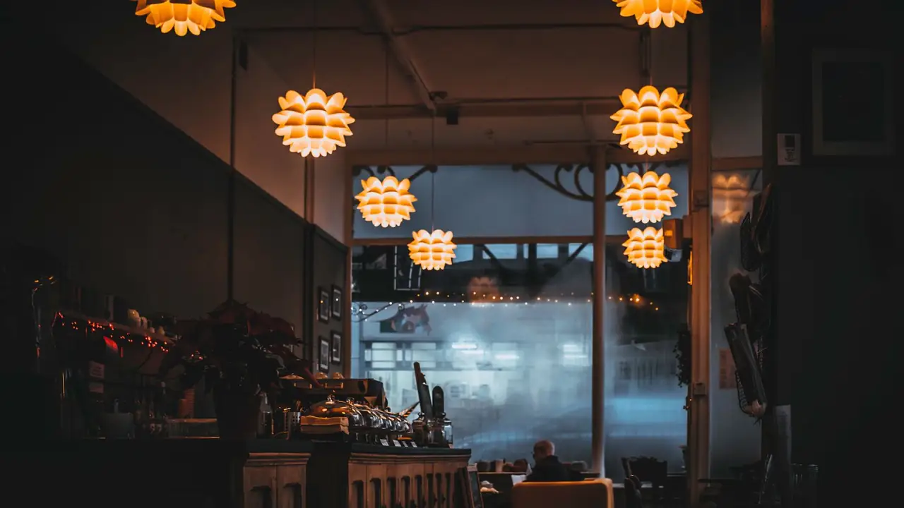
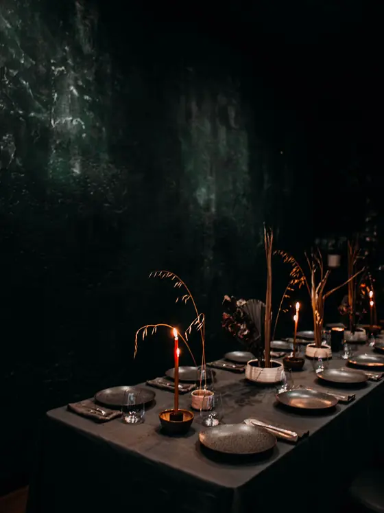

Une table de saison, au cœur de Lyon
Vingt-huit couverts, une carte courte refaite chaque mois, et des producteurs que je connais par leur prénom.
- OuvertDu mardi au samedi, midi et soir
- Adresse14 rue Exemple, 69002 Lyon
- Téléphone04 65 71 52 14
L'esprit du lieu
J'ai ouvert Maison Calixte en 2019 avec une idée simple : peu de plats, mais des plats que je peux soigner un par un.
Le matin, je passe au marché du quai Saint-Antoine. Ce que je trouve décide de l'ardoise du midi. Le soir, la salle se tamise et la cuisine prend son temps : cuissons lentes, jus réduits, desserts montés à la commande.
Élise Calixte, cheffe
- 28couverts, pas un de plus
- 12producteurs à moins de 80 km
- 1carte nouvelle chaque mois

Les incontournables
Trois assiettes qui ne quittent jamais longtemps la carte.
-

Saint-Jacques snackées
19 €Beurre noisette, purée de céleri fumé et herbes du jardin.
-

Magret de la Dombes
31 €Cuit rosé, jus au cassis, polenta crémeuse et légumes rôtis.
-

Tarte fine aux figues
12 €Pâte sablée au sarrasin, crème d'amande et miel de montagne.
La carte
Elle tient sur une page et se lit ici, sans fichier à télécharger.
Entrées
- Saint-Jacques snackées19 €
- Beurre noisette, céleri fumé, herbes du jardin.
- Œuf parfaitVégétarien14 €
- Crème de champignons de Paris, noisettes torréfiées.
- Pâté en croûte maison16 €
- Volaille et pistache, pickles de légumes.
Plats
- Magret de la Dombes31 €
- Jus au cassis, polenta crémeuse, légumes rôtis.
- Omble chevalier29 €
- Cuit sur la peau, beurre blanc au vin jaune, poireaux.
- Courge rôtieVégétarien24 €
- Lentilles vertes du Puy, sauge, tomme de brebis.
Desserts
- Tarte fine aux figues12 €
- Sarrasin, crème d'amande, miel de montagne.
- Chocolat et praline rose13 €
- Ganache montée, sablé breton, éclats de praline.
- Fromages affinés11 €
- Trois fromages du moment, confiture de coing.
Déjeuner du marché29 €
Entrée, plat et dessert du jour. Du mardi au vendredi, le midi.
Menu dégustation68 €
Cinq services choisis par la cheffe. Le soir, pour toute la table.
Prix nets, service compris. Viandes d'origine France. Allergies ou régime particulier : dites-le à la réservation, je m'adapte.




À table
Le magret était parfait et le service attentif sans être pesant. On a pris le temps, personne ne nous a pressés.
Hélène M., dîner à deuxLe déjeuner à 29 € vaut bien des menus deux fois plus chers. J'y retourne chaque mois pour la nouvelle carte.
Antoine P., habitué du midiNous étions dix pour un anniversaire. Menu adapté à une invitée végétarienne, sans que rien ne soit demandé deux fois.
Sarah et Julien, repas de famille
Horaires et accès
| Mardi au vendredi | 12 h à 14 h · 19 h 30 à 22 h |
|---|---|
| Samedi | 19 h à 22 h 30 |
| Dimanche et lundi | Fermé |
Réserver une table
Réponse dans la journée, par e-mail ou par téléphone.